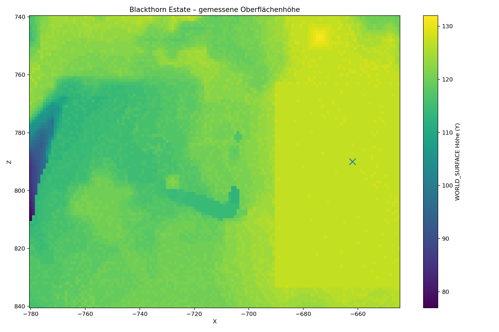

PRIVATE SERVER / ESTATE 001
Blackthorn Estate
Ein viktorianisch-gotisches Klippenanwesen für sechs Bewohner. Geplant anhand der importierten Overworld-Höhenkarten.
BAUANKERX −662 · Y 126 · Z 790HAUPTEINGANG: OSTEN (+X) · AUSSICHT: WESTEN (−X)
MASTERPLAN
Das Anwesen auf dem Plateau
Höhenkarte des GrundstücksWEST = KLIPPEN / OST = PLATEAU

● niedrigeres Gelände● höheres Plateau× Bauanker
GELÄNDE-ENTSCHEIDUNG
Die Klippe liegt westlich des Bauankers.
Die Höhenkarte zeigt einen deutlichen Abfall am westlichen Rand des untersuchten Bereichs. Das bisherige Konzept mit Klippenblick nach Osten war verkehrt herum. Der Haupteingang wird deshalb nach Osten gelegt; Terrasse, Pool und Panorama-Lounge orientieren sich nach Westen.
PLATEAU AM BAUANKERca. Y 127–128
WESTLICHE ABFALLZONElokal bis ca. Y 77
EMPFOHLENER HAUPTFUSSBODENY 129 (vorläufig)
Wichtig zur GenauigkeitDie Oberflächenhöhen wurden aus den MCA-Heightmaps gelesen; zusätzlich wurden an repräsentativen Punkten die Blockpaletten geprüft. Am Bauanker liegt Gras auf Y=126, darunter folgen Erde und Stein. Eine vollständige Block-für-Block-Klassifizierung aller Grundstücks-Chunks und möglicher Hohlräume steht noch aus. Die hochgeladene level.dat identifiziert den Server als Paper 26.3; die angegebene Zielversion 26.2 ist damit nicht bestätigt.
ARCHITEKTUR
Sechs private Flügel, ein gemeinsames Herz
Hohe Eingangshalle, Doppeltreppe und Galerie.
Sechs gleichwertige Wohnflügel mit Bad, Arbeitszimmer und Balkon.
Ballsaal, Bibliothek, Speisesaal, Kino und Wintergarten.
Lager, Werkstatt, Redstone, Tresor und Geheimgänge.
WORLD SURFACE
Gelände-Explorer
Gemessene Oberflächenhöhen aus den importierten MCA-Chunks. Klick auf die Karte zeigt den nächstgelegenen Rasterpunkt.
niedrig: Y 77hoch: Y 132
GELÄNDE-PROBE
Bauanker
X=-662, Z=790 · Oberfläche ungefähr Y=127–128.
GEMESSENER BEREICHX -780 bis -645Z 740 bis 840
BLOCKPROBE AM ANKERY=126 · grass_blockY=125–123 · dirt
DATENQUELLEWORLD_SURFACE + Blockpalette
ABDECKUNG13.736 / 13.736 Spalten
Hinweis: Die Heatmap verwendet die Minecraft-Heightmap (WORLD_SURFACE), keine vollständige Block-für-Block-Klassifizierung. Für einen exakten Aushubplan müssen zusätzlich die Blockpaletten der Chunk-Sektionen gelesen werden.
FLOORPLAN EXPLORER
Grundrisse & Koordinaten
Schematischer, maßstäblicher Raumplan mit absoluten Weltkoordinaten.
ErdgeschossNORDEN ↑ · WESTEN ← KLIPPENBLICK
GemeinschaftsbereichPrivatflügelService / Technik
ETAGEN-INFO
Erdgeschoss
SIX RESIDENCES
Bewohnerbereiche
Alle sechs privaten Flügel haben dieselbe Grundausstattung und können individuell eingerichtet werden.
SURVIVAL RESOURCE PLAN
Materialplanung
Materialpalette und grobe Beschaffungsplanung. Exakte Stückzahlen werden erst aus finalen Block-Layern berechnet.
CONSTRUCTION ROADMAP
Bauphasen
Checklisten für euren gemeinsamen Baufortschritt. Häkchen werden lokal gespeichert.